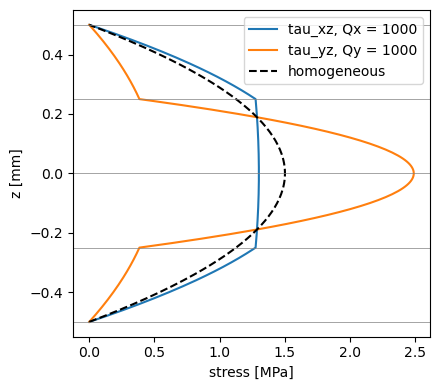
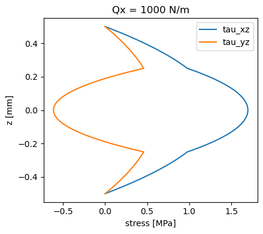

Transverse shear stresses through the thickness#
The FSDT gives constant transverse shear strains through the thickness. The stresses that satisfy equilibrium, vanish at the faces and are continuous at the ply interfaces are given by calc_transverse_shear_stress, for given shear forces, and by calc_equilibrium_transverse_shear, from the strain gradients of an actual solution. This tutorial also compares the shear correction methods. SI units are used throughout.
[1]:
import numpy as np
import matplotlib.pyplot as plt
from composites import laminated_plate, isotropic_plate
laminaprop = (142e9, 8.7e9, 0.28, 5.1e9, 5.1e9, 3.2e9)
plyt = 0.25e-3
Stresses for given shear forces#
For a cross-ply \([0/90]_s\) laminate and a homogeneous plate of the same thickness, the stresses of the shear force \(Q_x\) are compared with the parabola \(\tau_{xz} = 3 Q_x/(2h) (1 - 4z^2/h^2)\). The arguments are (z, Qy, Qx) and the results (tau_yz, tau_xz).
[2]:
cp = laminated_plate([0, 90, 90, 0], plyt=plyt, laminaprop=laminaprop)
h = cp.h
Qx = 1e3 # N/m
zs = np.linspace(-h/2, h/2, 201)
tau_xz = [cp.calc_transverse_shear_stress(z, 0., Qx)[1] for z in zs]
tau_yz = [cp.calc_transverse_shear_stress(z, Qx, 0.)[0] for z in zs]
parabola = 3*Qx/(2*h)*(1 - 4*zs**2/h**2)
fig, ax = plt.subplots(figsize=(4.5, 4))
ax.plot(np.array(tau_xz)/1e6, zs*1e3, label='tau_xz, Qx = %g' % Qx)
ax.plot(np.array(tau_yz)/1e6, zs*1e3, label='tau_yz, Qy = %g' % Qx)
ax.plot(parabola/1e6, zs*1e3, 'k--', label='homogeneous')
for zi in np.linspace(-h/2, h/2, 5):
ax.axhline(zi*1e3, color='gray', lw=0.5)
ax.set_xlabel('stress [MPa]')
ax.set_ylabel('z [mm]')
ax.legend()
fig.tight_layout()

The stresses vanish at the faces and change slope at the interfaces. The shear correction of 'rohwer' is the ratio between the strain energy of these stresses and the one of constant strains:
[3]:
print('scf_k13 = A55/Abar55 = %.4f' % cp.scf_k13)
print('scf_k23 = A44/Abar44 = %.4f' % cp.scf_k23)
scf_k13 = A55/Abar55 = 0.7454
scf_k23 = A44/Abar44 = 0.6685
Angle-ply coupling#
In a \([45/-45]_s\) laminate, a shear force \(Q_x\) also creates \(\tau_{yz}\), through the bending-twisting coupling \(D_{16}\), \(D_{26}\). The coupling term A45 of Ats is not zero, although Abar45 is.
[4]:
ap = laminated_plate([45, -45, -45, 45], plyt=plyt, laminaprop=laminaprop)
tau = np.array([ap.calc_transverse_shear_stress(z, 0., Qx) for z in zs])
fig, ax = plt.subplots(figsize=(4.5, 4))
ax.plot(tau[:, 1]/1e6, zs*1e3, label='tau_xz')
ax.plot(tau[:, 0]/1e6, zs*1e3, label='tau_yz')
ax.set_xlabel('stress [MPa]')
ax.set_ylabel('z [mm]')
ax.set_title('Qx = %g N/m' % Qx)
ax.legend()
fig.tight_layout()
print('Ats =\n', ap.Ats)
print('Abar_ts =\n', ap.Abar_ts)
Ats =
[[3136030.33223062 122955.17981668]
[ 122955.17981668 3136030.33223062]]
Abar_ts =
[[4150000. 0.]
[ 0. 4150000.]]

Stresses recovered from strain gradients#
calc_equilibrium_transverse_shear integrates the equilibrium equations from the bottom face with the derivatives of the generalized strains \(\{\varepsilon^{(0)}, \varepsilon^{(1)}\}\), e.g. of an FSDT solution. In cylindrical bending about \(y\), with \(M_{xx,x} = Q_x\) and the other derivatives of the resultants equal to zero, the strain gradients are inv(ABD) @ {0, 0, 0, Qx, 0, 0}, and the recovered stresses coincide with those of calc_transverse_shear_stress.
[5]:
eps_x = np.linalg.solve(cp.ABD, [0, 0, 0, Qx, 0, 0])
eps_y = np.zeros(6)
z, tyz, txz = cp.calc_equilibrium_transverse_shear(eps_x, eps_y, z=zs)
print('max difference [Pa]:',
np.abs(txz[0] - np.array(tau_xz)).max())
max difference [Pa]: 6.984919309616089e-10
calc_aposteriori_energy gives the transverse shear strain energies of the recovered stresses, from which the a posteriori factor of Noor and Peters, \(k_{13} = Q_x^2 / (2 \bar{A}_{55} U_{13})\), follows:
[6]:
U13, U23, Qy_r, Qx_r = cp.calc_aposteriori_energy(eps_x, eps_y)
print('resultant of the recovered stresses: Qx = %.6f N/m' % Qx_r[0])
print('a posteriori k13 = %.4f' % (Qx**2/(2*cp.Abar55*U13[0])))
print("'rohwer' scf_k13 = %.4f" % cp.scf_k13)
resultant of the recovered stresses: Qx = 1000.000000 N/m
a posteriori k13 = 0.7454
'rohwer' scf_k13 = 0.7454
Comparison of the shear correction methods#
The methods are selected with the argument shear_correction. For a homogeneous plate most of them give 5/6; they differ for laminates, in particular for a sandwich with a soft core. 'thickness_shear' requires the densities of the plies.
[7]:
core = (0.1e9, 0.1e9, 0.3, 0.04e9, 0.04e9, 0.04e9)
laminates = {
'isotropic': dict(stack=[0], plyt=1e-3, laminaprop=(70e9, 0.3),
rho=2700.),
'[0/90]s': dict(stack=[0, 90, 90, 0], plyt=plyt, laminaprop=laminaprop,
rho=1600.),
'sandwich': dict(stack=[0, 90, 0, 90, 0], plyts=[plyt, plyt, 10e-3,
plyt, plyt],
laminaprops=[laminaprop, laminaprop, core, laminaprop,
laminaprop],
rhos=[1600., 1600., 50., 1600., 1600.]),
}
methods = ['rohwer', 'vlachoutsis', 'birman_bert', 'thickness_shear',
'constant']
print('%-12s' % 'k13' + ''.join('%17s' % m for m in methods))
for name, kwargs in laminates.items():
k13 = [laminated_plate(shear_correction=m, **kwargs).scf_k13
for m in methods]
print('%-12s' % name + ''.join('%17.4f' % k for k in k13))
k13 rohwer vlachoutsis birman_bert thickness_shear constant
isotropic 0.8333 0.8333 1.0000 0.8225 0.8333
[0/90]s 0.7454 0.7453 0.8882 0.6788 0.8333
sandwich 0.1010 0.1010 0.1036 0.0959 0.8333